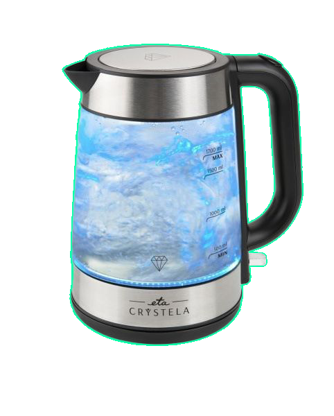

VÝPREDAJ
THOMSON 32HD3306
 Cena:219,00€179,00€
Parametre:
Cena:219,00€179,00€
Parametre:
- Typ obrazovky: LED
- Typ rozlíšenia: Full HD
Podrobný popis:
Kompaktný LED televízor Thomson 40FD3306 v čiernej farbe ponúka 40“ uhlopriečku (102 cm) a čistý obraz vo Full HD rozlíšení (1920 x 1080), vďaka ktorému si môžete pozrieť svoje obľúbené filmy či relácie v skvelej kvalite. Vstavané reproduktory disponujú výkonom 2 x 8 W a zariadenie podporuje typy signálov DVB-C, DVB-T2 či DVB-S2. K dispozícii je dvojica HDMI portov, USB port 2.0, dvojica RF vstupov a kompozitný video vstup. Tomuto modelu nechýba ani rozhranie CI a výstup pre slúchadlá. Pýši sa hĺbkou farieb 8 Bitov a programovým sprievodcom EPG. Podporuje VESA štandard 100 x 100.
APPLE IPHONE 12 MINI 64 GB BLACK ČIERNY
 Cena:799,00€659,00€
Parametre:
Cena:799,00€659,00€
Parametre:
- Kapacita: 64 GB
- Rozlíšenie displeja: Full HD+
Podrobný popis:
Smartfón Apple iPhone 12 mini v čiernom prevedení ponúka 5,4" Super Retina XDR OLED displej s rozlíšením 2340 x 1080 pixelov pri 476 ppi. Telo tvorí kombinácia skla a kvalitného hliníka, displej chráni Ceramic Shield. Disponuje čipom A14 Bionic. K dispozícii interné úložisko o veľkosti 64 GB. Vo výbave zadný duálny 12 Mpx + 12 Mpx fotoaparát s možnosťou nahrávania v Dolby Vision a predná 12 Mpx kamera s Face ID. Využíva Li-ion batériu s podporou rýchleho nabíjania Qi. Podpora technológie 5G zaručí skvelú rýchlosť. Vo výbave nájdete MagSafe, Wi-Fi 6, Bluetooth 5.0, NFC aj GPS. Telefón sa vyznačuje odolnosťou voči vode a prachu na úrovni IP68.
CANON EOS 2000D + EF-S 18-55MM IS II VALUE UP KIT
 Cena:519,00€469,00€
Parametre:
Cena:519,00€469,00€
Parametre:
- Uhlopriečka ("): 3 "
- Wi-Fi: Áno
- GPS: Áno
Podrobný popis:
Digitálna zrkadlovka Canon EOS 2000D s objektívom Canon EF-S 18-55mm IS II v elegantnom čiernom prevedení disponuje 3" LCD displejom, snímačom CMOS typu APS-C s rozlíšením 24,1 megapixelov a obrazovým procesorom DIGIC 4+. Umožňuje kontinuálne snímanie rýchlosťou 3 sn/s. Zrkadlovka s citlivosťou ISO 100 až 6400 ponúka automatický inteligentný scénický režim, kreatívne filtre a režim Video Snapshot. K dispozícií tiež 9-bodové automatické zaostrovanie, integrovaný sprievodca funkciami a nastaveniami či optický hľadáčik. Zrkadlovka s podporou Wifi, NFC poskytuje filmy v rozlíšení Full HD/1080p s frekvenciou 30 snímok za sekundu.
LORD D1
 Cena:639,00€629,00€
Parametre:
Cena:639,00€629,00€
Parametre:
- Šírka: 59,8 cm
- Maximálna hlučnosť: 44 dB
- Počet súprav riadu: 14
Podrobný popis:
Vstavaná umývačka riadu LORD D1 dokáže umyť až 14 obedových súprav. S hlučnosťou iba 44 decibel pracuje veľmi potichu. Efektívne usporiadanie riadu zabezpečuje systém košov VarioFlex v hornej i dolnej časti. Disponuje piatimi umývacími programami. V ponuke je aj množstvo ďalších praktických funkcií, ktoré vám prinesú do kuchyne maximálny komfort. Ovládanie pomocou LED displeja je veľmi jednoduché a intuitívne. LED displej informuje aj o zostávajúcom čase do konca umývacieho programu, alebo potrebe doplnenia soli alebo leštidla. K dispozícii je aj odložený štart o 24 hodín. Sveteľný lúč premietaný na podlahu a zvukový signál pomáha rozpoznať koniec programu.
ETA CRYSTELA 6153 90000

Cena:36,90€29,90€
Parametre:
- Príkon: 2200 W
- Nastaviteľná teplota: Nie
- Objem: 1700 ml
Podrobný popis:
Rýchlovarná kanvica Eta Crystela 6153 90000 ponúka elegantné a štýlové sklenené prevedenie s vnútorným osvetlením, čo prináša netradičný prvok pri varení vody. Objem kanvice je 1,7 litrov s príkonom 2200 W. Miesto vo vašej kuchyni ušetrí šikovne vymyslený priestor pre uloženie prívodnej šnúry. Bezpečnosť je zabezpečená automatickým vypnutím pri dosiahnutí bodu varu, vypnutím pri odobraní prístroja z podstavca a blokovanie zapnutia kanvice bez vody. Oceníte vyberateľný filter vodného kameňa a skryté ohrevné teleso. Na ergonomickej rukoväti spotrebiča nechýba ani praktické tlačidlo pre otvorenie veka.
Všetky autorské práva sú vyhradené ©Damián Jaroš/CGP/II.B